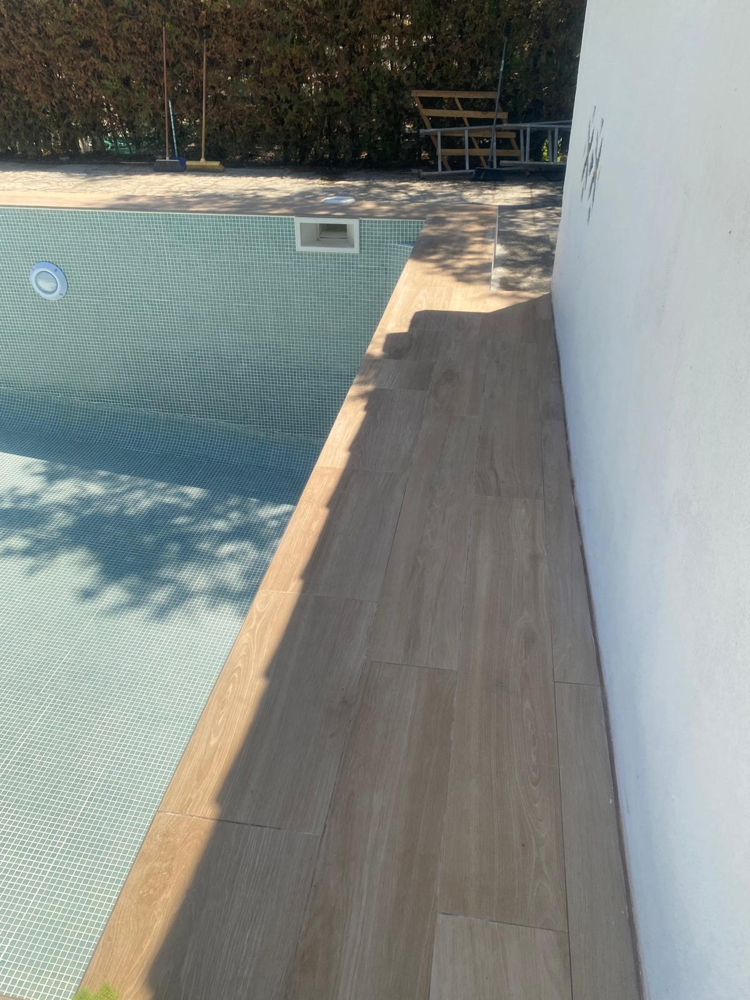
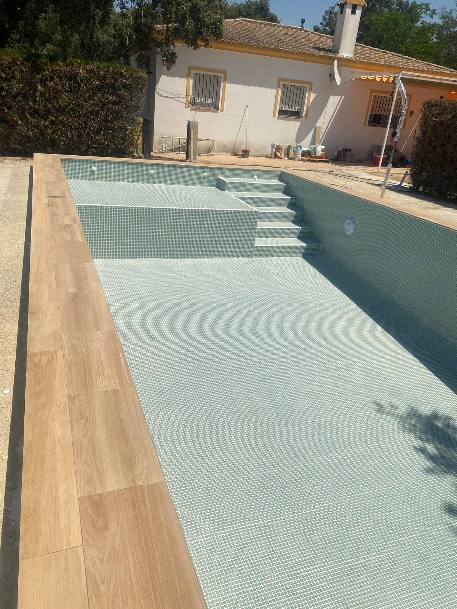
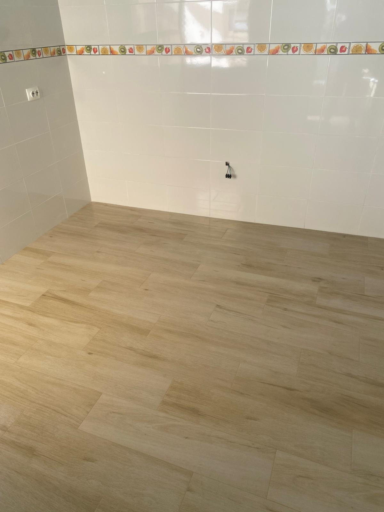
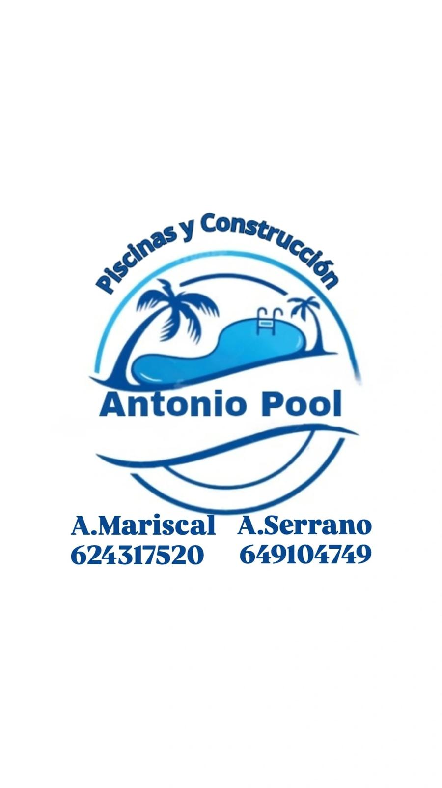
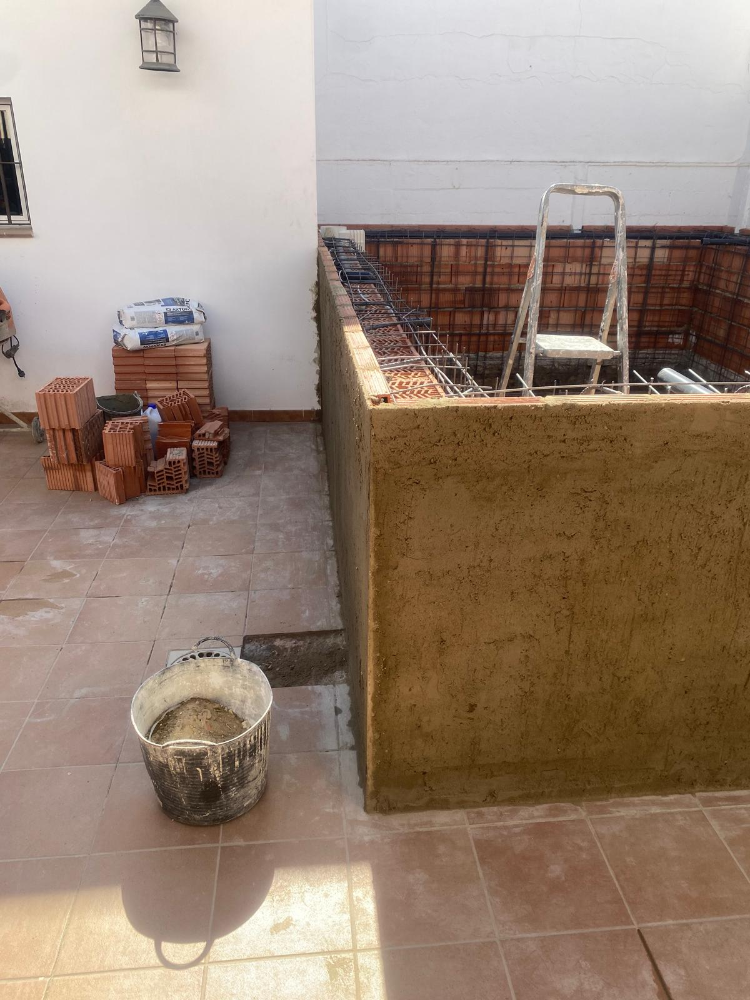
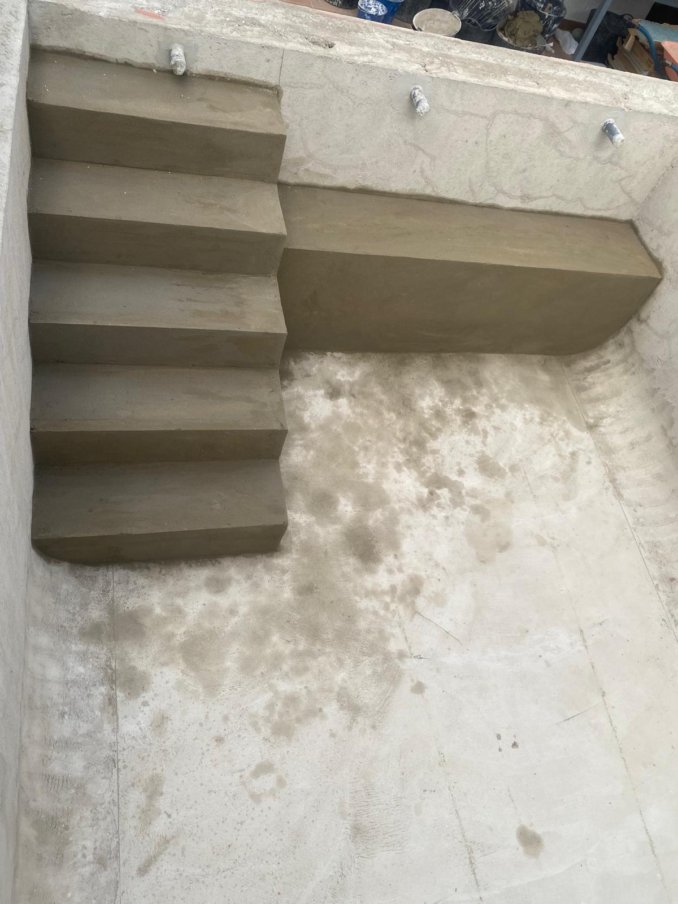
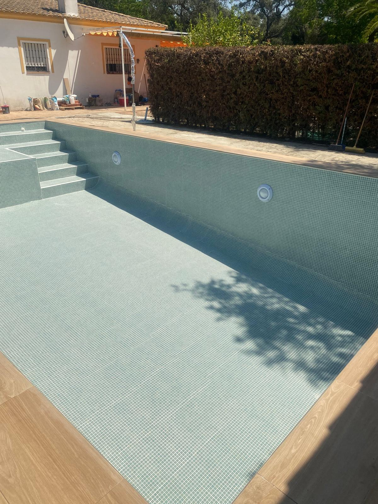

Nuestros trabajos





Piscinas, reformas y construcción con acabados profesionales
WhatsApp Antonio Mariscal WhatsApp Antonio SerranoAntonio Pool es una empresa especializada en construcción de piscinas, reformas integrales y trabajos de albañilería.
Dirigida por Antonio Mariscal y Antonio Serrano, ofrecemos soluciones personalizadas para viviendas, patios, jardines y todo tipo de espacios exteriores e interiores.
Trabajamos con seriedad, compromiso y materiales de calidad para conseguir acabados duraderos, profesionales y adaptados a las necesidades de cada cliente.
Teléfono: 624 317 520
Teléfono: 649 104 749
Construcción, reforma y mejora de piscinas para viviendas y patios.
Reformas completas o parciales de viviendas, baños, cocinas y exteriores.
Trabajos de obra, tabiquería, cerramientos, reparaciones y mantenimiento.
Césped artificial, solados, zonas exteriores, trasteros y acabados decorativos.




Situación original antes del inicio de los trabajos.

Desarrollo de los trabajos y ejecución del proyecto.

Proyecto terminado y listo para disfrutar.
Antonio Mariscal: 624 317 520
Antonio Serrano: 649 104 749
Especialistas en: piscinas, reformas, construcción y albañilería